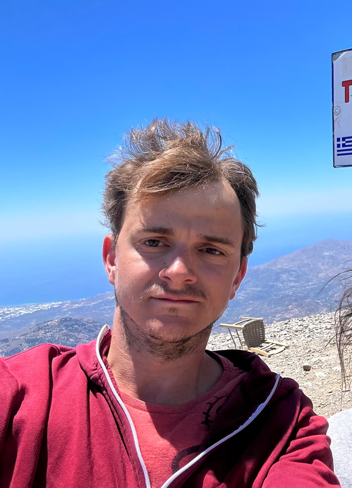

Maximilian Petrowitsch
PhD student at Western University, supervised by Chris Kapulkin. Previously: MSc in Mathematics from Western and MA in Philosophy from Università della Svizzera italiana, Lugano, Switzerland, including an exchange in the Master of Logic at the ILLC in Amsterdam, Netherlands.
My current research is in deep learning, with a particular focus on the interpretability of large language models and on AI safety. The approach is mathematical: using mathematical tools to understand how deep learning systems behave, and to make them safer and more reliable.
Alongside this, I also work in natural language processing, in particular natural language inference with BERT-style transformers.
Further interests include formalisation, autoformalisation and automated theorem proving, especially where they meet machine learning.
Earlier in my PhD, my work was in higher category theory, homotopical algebra, mathematical logic and type theory, focusing on the semantics of homotopy type theory (HoTT) in ∞-categories, in particular on elementary ∞-toposes as models of HoTT.
I run, cycle, and climb.
